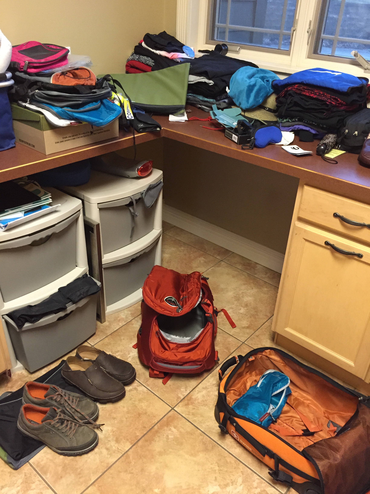

Advent, Anticipation, Adventure
In the Christian church, Advent is a season of waiting, a season of anticipation. Normally, we are waiting and anticipating the celebration of the birth of Christ. Christmas! This year is no different, but it is a bit hard to not look just past Christmas at what awaits us in the new year. Adventure. I never thought about the fact that adventure begins with advent.
On January first, we will board a plane for Vietnam. We'll spend three weeks in Vietnam, Cambodia and Thailand, and then head to our home for the Spring semester on the Island of Malta. We've been telling people that Vietnam is right on the way to Malta. On January 30th our 12 Luther students will join us and move in to one of the three flats in Sliema, just two blocks from this amazing view. I have to pinch myself just thinking that I'm going to be living on an island in the Mediterranean for five months.
Our students begin classes February second. We will join in the fun, becoming students ourselves for the history of Malta class. But, after one short week of class we will take them to Rome for four days. At the end of March we will take them to Morocco for a week, and then the students will have another week to travel on their own. While they are off enjoying the wonders of Europe Jane and I will be biking through the Andalusia region of Spain. In May our adventure takes us to Istanbul for a long weekend. We are hoping to fit in a short trip to Sicily or maybe Tunisia.
The students leave after the first week of June, and then Jane and I will treat ourselves to a cruise beginning in Venice and through the greek isles. We will end in Istanbul, but quickly join up with a Luther alumni tour hosted by our friends for a few days in Prague. We may even see our old foreign exchange student Cenek! From Prague we fly home, exhausted, no doubt.
Here is a look at our preparatory piles as we begin to organize and pack for the big odyssey.
Christmas gifts are travel-related this year, versatile clothes, shoes, and camera gadgets, as we anticipate the experiences of the next six months. Most of them are going directly into the suitcase rather than under the tree. We are really looking forward to this opportunity to immerse ourselves in a new culture in a way that you cannot do by being a tourist for a few weeks. Watch this blog, as I will be writing about our journey here.
Many may say, ooh! you shouldn't be writing about this people will read this and break in. Well, I can't not document this incredible journey. And I have six words for the would-be breaker inners. Home Security, Web Cams, House Sitter. We are covered.
Comments